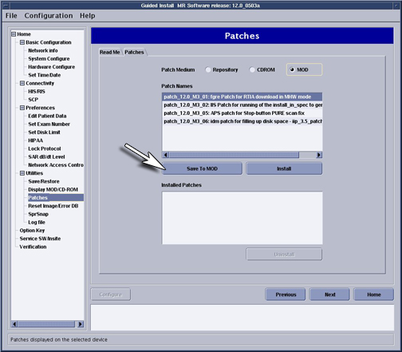

| NOTE: |
(For 12.x only)
After installation, patches
can be archived to MOD. To archive patches, install MOD and Select [Save to MOD] (shown in Illustration 5). This will
allow restoration of patches via MOD if the software crashes. Illustration 5: Patch Archive to MOD  |